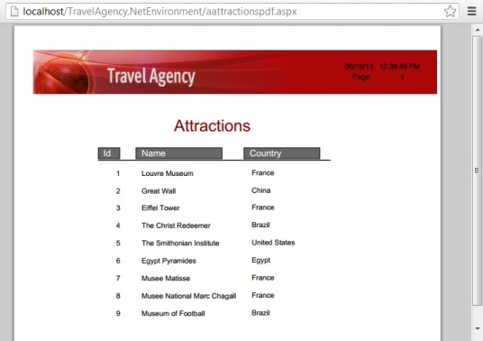

Procedure object
Defines a program or routine that implements an algorithm, including database access, data updates, and printing. Scenarios1. A typical example is a list, where the procedure is meant to navigate some tables, reading the database, to obtain the output that is then displayed on the browser, in a PDF format. For example, in the context of a Travel Agency application, a tourist attractions list:  2. Another example: all the flights that were scheduled to take off from a given airport on a certain day must be postponed. To achieve this, a procedure must be programmed to navigate the flight's table, changing the departure date and time for the appropriate flights (in this case, no output is needed). 3. A third example is a process that increases the flight prices according to a rate set by the airlines. 4. And the last example could be a complex calculation (other than formula) that, for instance, needs to navigate some tables and possibly use certain functions, formulas, and transformations in order to obtain the desired result (for instance, the destination at which more passengers arrive in a period of time, considering all airlines). SectionsA Procedure object has several sections that can be defined:
Like most objects, it also has a Properties editor to configure general aspects of the object: some apply to all objects, such as the name, others are specific to procedure objects, such as the kind of output (only to file, printer, etc), the call protocol when the object is main, etc. Summing up, a procedure can be classified according to whether the focus is on:
Note: As its name suggests, the programming style supported is imperative, although there are also declarative parts (ie: the Layout). ExampleSuppose you need to define a PDF report in order to list the airlines a Travel Agency works with. The procedure that implements this requirement could have the following Layout (for a complete explanation go to Procedure Layout):
And the logic could be:
Header
Print Pb_Header
End
For each Airline
Print Pb_Body
Endfor
...where the Header command provides the header that each page of the resulting report will have, the For Each command is used to access the database, and the Print Command is the command that prints the Layout's called print block in the output. NoteWhen a Procedure is declared Main Object, it will be generated with the prefix "a" as follows: aProcedureName (.Net and Java only). Videos
|


| Sub Categories | |
| Category:Database update through procedures | Category:Static reports |